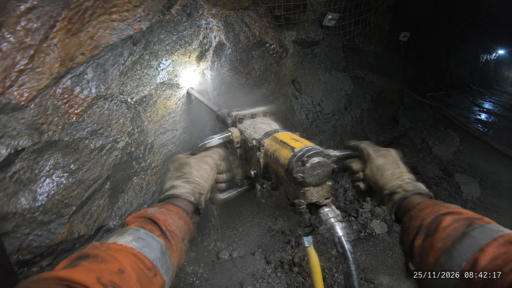

Training data from places no one else can film.
Pulse Data records and labels real work inside mines, foundries, packaging lines, factories and farms run by our family-office partners. Tell us what your model needs to see, and we install the sensors to capture it.

Sample frames from an underground drilling session, recorded on a helmet camera.
Already inside the gate.
Our partners are family offices that own operating companies in places that are hard to reach and harder to film. These businesses already supply large international clients, so their floors run real shifts, and their owners can say yes to recording.
| Region | Sites | What we can record |
|---|---|---|
| Africa | Mines and foundries | Underground and surface work, drilling, haulage, smelting and casting. |
| India | Packaging businesses | Line operation, folding and packing, quality checks, palletising. |
| Asia | Manufacturing businesses | Assembly, machine tending, inspection and hand-level manipulation. |
| Russia | Farms | Field operations, machinery, livestock and grain handling through the seasons. |
Need a different kind of site? Ask us and we'll check the network.
Name the sensor. We'll mount it.
Because we work through the owners, we can put collection hardware where outside vendors are rarely allowed: on helmets, machines, vehicles and production lines. Every install is approved by the site and fitted around the work, not in its way.
Worn
- Helmet and chest cameras
- Wrist cameras
- Motion sensors (IMU)
- Eye tracking
- Audio
Fixed
- Overview cameras
- Thermal cameras
- Depth cameras
- LiDAR scans
Machine
- PLC and telemetry
- Vibration
- Acoustics
- Power draw
Mobile
- Vehicle cameras
- Drones
- GPS
- Multispectral
Yours
- Send us your rig. We install it, run it and send back the data.
- Agree with the ownerWe scope the work with the site's owner and safety lead before anything is mounted.
- Install and testField crews fit and calibrate the devices, then run test recordings against your spec.
- Record real shiftsCapture runs during normal work, with daily checks so problems are fixed on site, not in your pipeline.
Consented first. Clean on delivery.
Data you can't defend is data you can't use. Every capture is agreed with the people in it, and every file is checked before it reaches you.
Ethical collection
Agreed before recording, not after.
- Owner sign-offThe site owner approves what is recorded, where and when.
- Individual consentEveryone on camera agrees in their own language and can opt out.
- Nothing hiddenDevices are visible, and everyone on site knows when recording is on.
- Privacy on requestFaces, names and site details blurred or generalised before delivery.
Clean data
Checked before it leaves us.
- SyncedEvery stream aligned to one clock, with any drift reported.
- CheckedEach session reviewed for dropped frames, sensor faults and unusable footage.
- FilteredOut-of-spec recordings are removed, not passed on.
- DocumentedEvery file carries its site type, device, date and consent record.
Labelled by people who know the work.
Annotators are briefed on each process by the people who run it, so a rock drill is labelled as a rock drill, not "tool 3".
- Objects and tracksBoxes and IDs that follow tools, people and materials across frames.
- Hands and contactHand keypoints and tool contact points for manipulation learning.
- RegionsMasks for rock faces, product, spills and defects.
- Actions and stepsTimed segments that follow the real procedure from start to finish.
- DescriptionsPlain-language captions and Q&A for vision-language models.
Built for two kinds of team.
One network, recorded for different models.
Robotics and world-model labs
Real manipulation and egocentric data from heavy work, not lab benches.
- Helmet and wrist views of skilled hands using real tools
- Motion and force sensors fitted where your model needs them
- Long, continuous sessions from real shifts
Industrial AI and vision teams
Footage from working production floors, labelled for the jobs your models do.
- Safety, PPE and process monitoring footage
- Inspection and defect data from live lines
- Machine signals recorded alongside the video
Questions buyers ask.
How do you get access to these sites?
Our partners are family offices that own the businesses. Access is agreed with the owners, and we work alongside each site's own management and safety teams.
Can you install our own hardware?
Yes. Send us the rig or the spec, and we handle mounting, power, calibration and day-to-day operation on site.
How do you make sure collection is ethical?
Owner sign-off, individual consent from everyone recorded, visible devices, and de-identification on request. The consent record travels with the data.
What do you mean by clean data?
Streams synced to one clock, every session checked for dropped frames and sensor faults, unusable recordings removed, and each file documented with its source and consent.
Which formats do you deliver?
Tell us your schema and file formats, and we deliver to match your pipeline.
Can we see data before we commit?
Yes. Request a sample and we'll send footage and labels to review.
Ask for a sample reel.
Tell us what your model needs to see. We'll reply with a sample and the sites that can produce it.